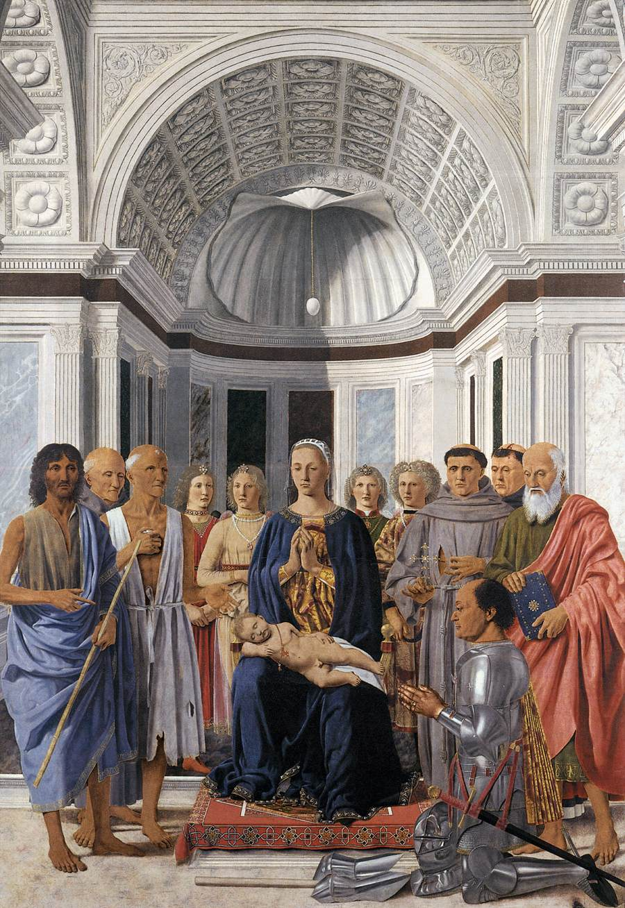

Une architecture qui nous ramène à Marie

Repères pédagogiques ajoutés.
Lignes droites, courbes et axe central : chez Piero, la géométrie organise le regard.
Dans cette Sainte Conversation, également appelée Retable de Montefeltro, les personnages occupent un espace architectural soigneusement construit. Suivez les tracés pour découvrir comment perspective et composition se répondent.
1 · L’arc — en jaune
Le grand arc encadre la voûte à caissons et couronne le groupe. Sa forme presque symétrique renforce l’équilibre de l’architecture autour de Marie.
2 · L’axe central — en vert
La verticale passe par le centre de la coquille, l’œuf suspendu et la figure de Marie. Cet alignement relie le décor architectural au groupe sacré et souligne la place centrale de la Vierge.
3 · Les courbes qui se répondent — en violet
En haut, une courbe souligne le bord inférieur de la coquille. En bas, une autre suggère la disposition enveloppante des personnages autour de Marie. Ces deux courbes, ouvertes l’une vers l’autre, contribuent à l’impression d’un espace qui accueille et rassemble.
La courbe inférieure est un guide de lecture : elle ne suit pas un contour matériel du tableau et ne signifie pas que toutes les figures occupent un demi-cercle parfait.
P · Le point de fuite — en rouge
Les lignes rouges suivent certaines arêtes des corniches latérales, puis les prolongent vers le visage de Marie. Le point P indique approximativement leur convergence. La ligne bleue représente la ligne d’horizon, à hauteur du regard du spectateur dans l’espace peint.
Ici, la perspective attire donc notre regard vers la figure centrale : Marie est à la fois le cœur du groupe et le foyer de la construction architecturale.
À retenir
Les lignes conduisent vers Marie, l’axe central affirme sa présence et les courbes enveloppent le groupe. Chez Piero, la géométrie contribue à l’unité et au calme de la scène.
Les tracés sont des repères pédagogiques approchés. Les pointillés prolongent les lignes visibles ; les courbes violettes soulignent des relations de composition.